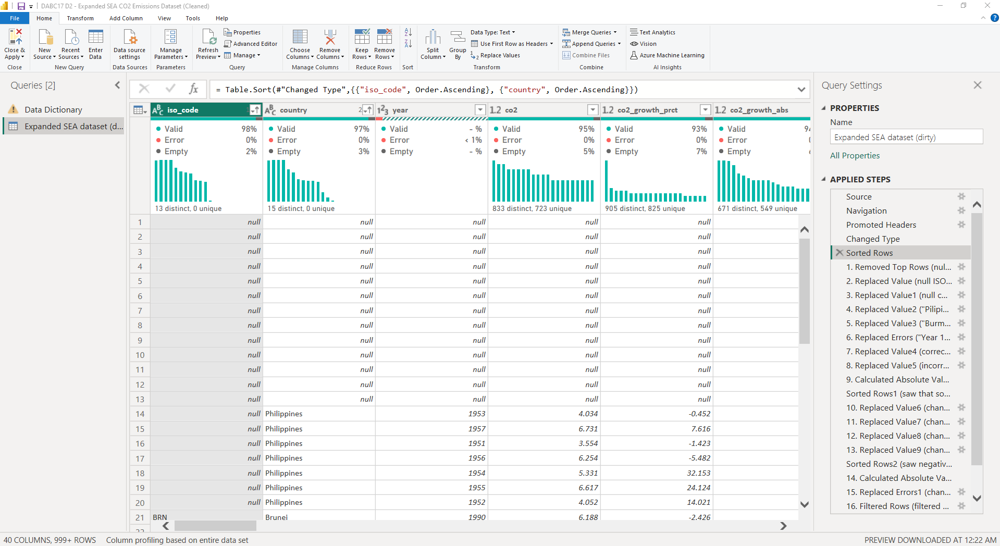
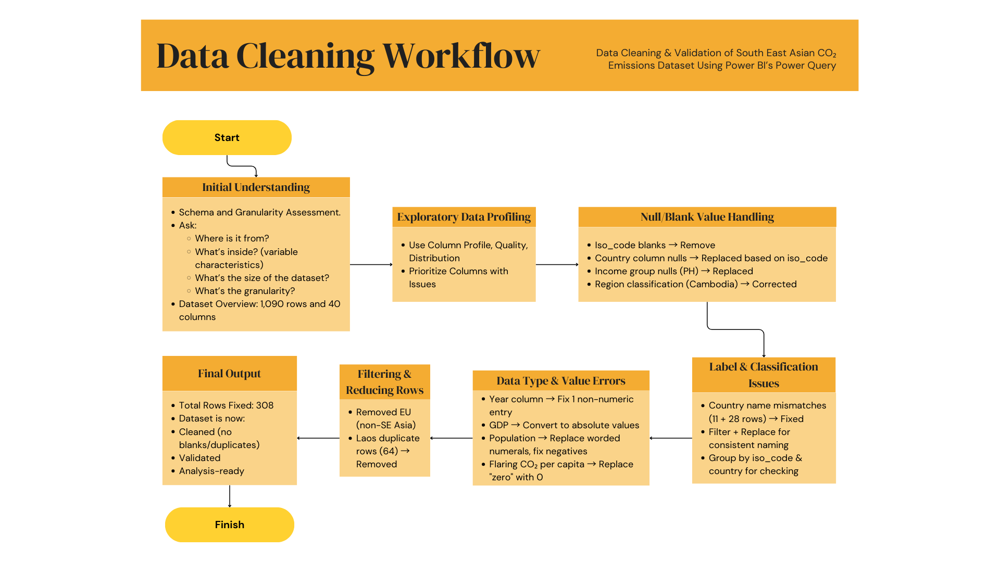

Data Cleaning of CO₂ Dataset
Project Overview
This project involved the cleaning of a South East Asian CO₂ emissions dataset, consisting of 1,090 rows and 40 columns, to prepare it for reliable analysis and visualization. The initial step involved exploring the dataset’s structure and assessing its schema, size, and granularity—a crucial process that helped reduce the domain knowledge gap. This included skimming through the data and conducting external research to understand what each field represented and how it should behave across time and regions.
Using Power BI’s Power Query Editor, I employed tools such as Column Profile, Column Quality, and Column Distribution to systematically detect data issues. The cleaning process addressed a total of 308 individual data errors scattered across the dataset. These errors included a combination of nulls/blanks, data type mismatches, duplicate records, and inconsistent or incorrect labels (e.g., mislabeled country names, invalid region or income group classifications, worded numerals in numeric fields, and negative values where only positives were valid).
Despite initial challenges—such as limited domain familiarity and a learning curve with Power Query—I was able to clean and transform the dataset effectively. After cleaning, the dataset contained no critical missing or duplicate records, adhered to consistent formatting and naming standards, and passed logical validation checks. These enhancements significantly improved the dataset’s integrity and made it suitable for downstream use in visualization, comparative analysis, and storytelling.
The refined data became the foundation for the follow-up project titled “Analyzing Carbon Emissions of the Philippines and Singapore: A Data Visualization Study Using Power BI.”
Skills Strengthened
- Data Cleaning: Detecting and resolving a wide range of data quality issues.
- Exploratory Data Understanding: Researching field definitions and understanding the terminologies used in the dataset to build domain familiarity.
- Power BI Proficiency: Applying Power Query transformations to improve data integrity.
- Analytical Thinking: Prioritizing and addressing data errors with attention to detail.
- Workflow Design: Structuring the data cleaning process for clarity, reproducibility, and efficiency.
This experience underscored the value of meticulous data cleaning and its critical role in enabling accurate, insightful, and trustworthy analysis.
View Full Data Cleaning Workflow Download Dataset from GitHub (.pbix and .xlsx)